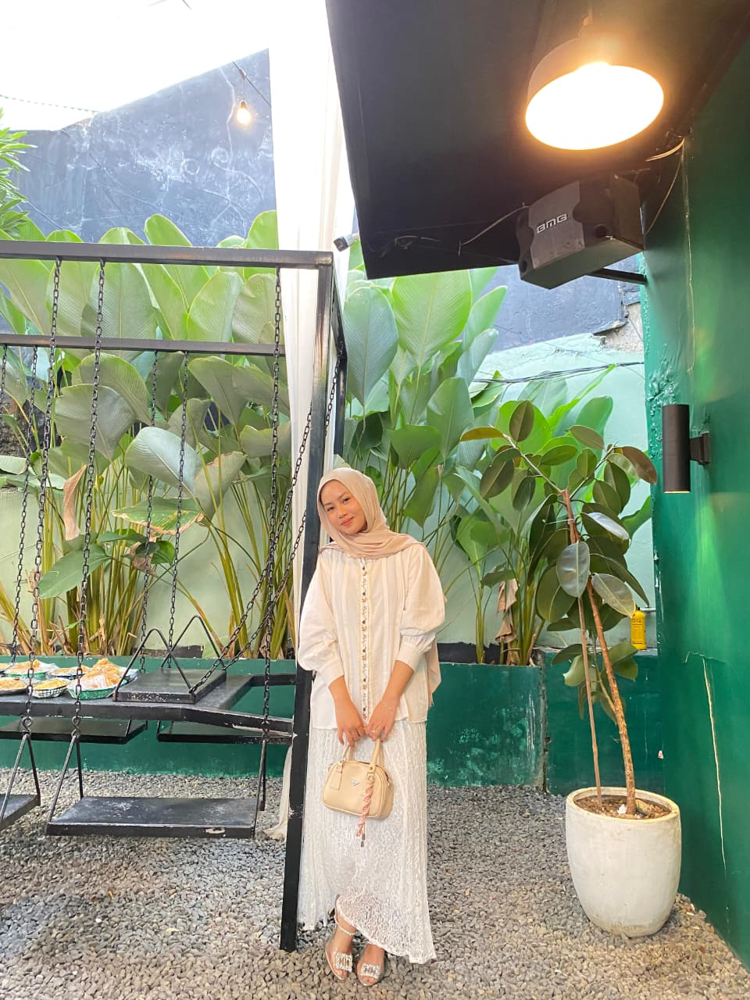

Hallo semuanya Saya Nabilla pengembang blog Eksplorasi Tarian. Melalui platform ini, saya berharap kita bisa lebih mengenal dan melestarikan kekayaan budaya Nusantara, khususnya seni tari tradisional.